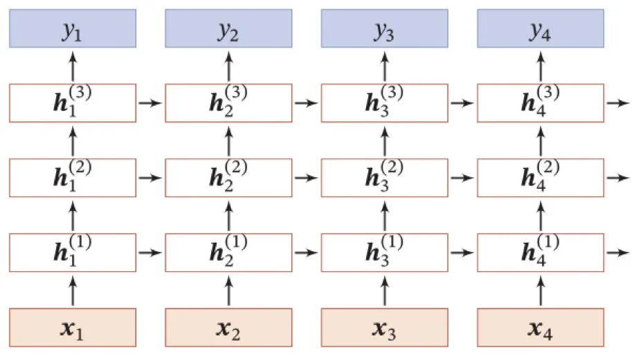
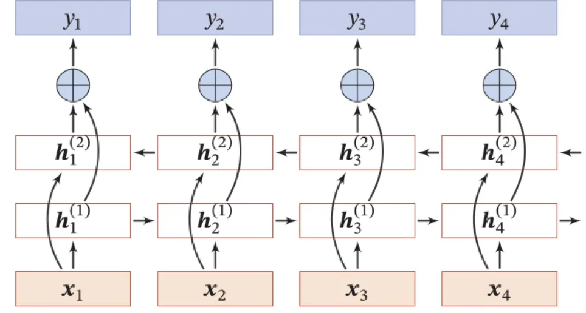

计算机视觉 · 第 7 章 循环神经网络
7.8 深层循环神经网络
到 7.7 节为止，我们讨论的都是「单层」的循环神经网络。本节把网络加深，思路有两条：一条是在时间之外再增加层数，让同一时刻的输入要经过多级处理才到输出；另一条是让信息同时从两个方向流过序列，使当前时刻既能看前文、也能看后文。前者叫堆叠循环神经网络，后者叫双向循环神经网络。
1. 堆叠循环神经网络
最简单的加深方式是把多个 RNN 层层叠起来。课件对这一做法的概括只有一句：增加同一时刻网络输入到输出之间的路径。

读图时注意两个方向。横向仍然是时间：每一层内部都有一条从左到右的状态链，把上一时刻的隐状态传给下一刻。纵向是新加的：第 l 层的 ht(l) 不再由原始输入直接算出，而是同时接收第 l−1 层同一时刻的输出 ht(l−1) 与本层上一时刻的状态 ht−1(l)。于是同一时刻的「输入 → 输出」路径被拉长了，网络能在不同抽象层次上处理序列：底层学到的可能是较局部的模式，高层再把它组合成更高层的结构。
代价也很直接：层数越深，参数越多，梯度回传的路径也越长，训练更困难。这与前馈网络里「深 vs 浅」的权衡是同一件事。
2. 双向循环神经网络
第二条思路针对的是「只看过去」这一限制。课件说明了动机：在有些任务中，一个时刻的输出不但和过去时刻的信息有关，也和后续时刻的信息有关。因此，我们可以增加一个按照时间的逆序来传递信息的网络层，来增强网络能力。

具体做法是让两个独立的循环层并行工作：一个正向层从 t = 1 读到 t = T，一个反向层从 t = T 读回到 t = 1。到了每一时刻 t，两层的隐状态都可用来产生输出，通常把它们拼接（或相加）后送给输出层。这样一来，t 时刻的输出同时包含了「t 之前的信息」和「t 之后的信息」。
回到 7.3 节的例子上就很好理解了：判断「Zhao」是不是人名的一部分，看它前面的「Tom」有帮助，看它后面的词同样有帮助。所以词性标注、命名实体识别这类「每一位都要判断、且前后文都有用」的任务，最常用的就是双向循环网络——图 6 里那个 BiLSTM 正是「双向 + LSTM」的组合。
要注意的是，双向结构有适用的边界：它要求整条序列事先都能拿到（比如离线的一段文本），因此不能用于「边到达边处理」的流式场景；这类场景只能退回单向结构。
本节小结
- 堆叠循环神经网络通过增加同一时刻「输入到输出」之间的路径来加深网络：第 l 层的隐状态同时接收下一层的同刻输出与本层上一时刻的状态，隐状态沿时间与层间两个方向传递。
- 加深带来的收益是更强的层次化表示能力，代价是参数变多、梯度回传路径变长，训练更难。
- 双向循环神经网络（Bi-RNN）增加一个按时间逆序传递信息的网络层：正向层从前往后读，反向层从后往前读，两者在同一时刻的输出合并后共同决定该时刻的输出。
- 双向结构适合「每个时刻都要判断、且前后文都有用」的标注类任务（如 BiLSTM 用于词性标注与信息抽取），但要求整条序列事先可得，不能用于流式处理。